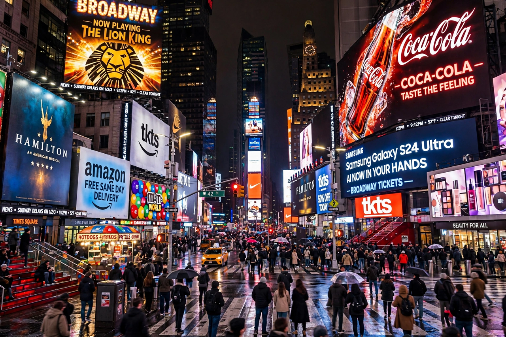

| Location | Midtown Manhattan, New York City |
|---|---|
| Formed by | Junction of Broadway, Seventh Avenue, and 42nd Street |
| Former name | Longacre Square |
| Named for | The New York Times |
| Nickname | "The Crossroads of the World" |
Times Square is a major commercial intersection, tourist destination, entertainment hub, and neighbourhood in the Midtown Manhattan section of New York City. It is formed by the junction of Broadway, Seventh Avenue, and 42nd Street, and stretches roughly from West 42nd to West 47th Streets. Brightly lit by numerous billboards and advertisements, it is sometimes called the "Crossroads of the World" and serves as the hub of the Broadway theatre district.
Originally called Longacre Square, the area was renamed in April 1904 after The New York Times moved its headquarters to the newly erected Times Building (now One Times Square). The newspaper's publisher, Adolph Ochs, persuaded the city to rename the square and build a subway station there. The first New Year's Eve celebration at the site was held on December 31, 1904, and the now-famous ball drop began in 1907.
Through the mid-20th century, Times Square acquired a seedy reputation associated with peep shows and crime, reaching a nadir in the 1970s and 1980s. A major redevelopment effort in the 1990s, led by the city and state with partners including the Walt Disney Company, restored the area as a family-friendly entertainment and corporate district.
Times Square is one of the world's most visited tourist attractions, drawing an estimated 50 million visitors annually, with roughly 360,000 pedestrians passing through daily. Its illuminated signs are protected by zoning rules that actually require buildings to display bright signage. One Times Square, largely vacant apart from its billboards and the New Year's Eve ball, is among the most valuable advertising locations on earth.
The surrounding Theater District hosts Broadway's major productions — recent decades have seen phenomena such as Hamilton at the Richard Rodgers Theatre a few blocks north — making the square the geographic and symbolic heart of American commercial theatre, the counterpart to London's West End.